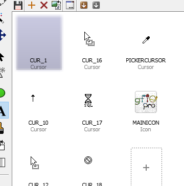

Icon libraries, program files and DLLs
Introduction
Windows icon libraries (.icl), program files (.exe) and DLLs contain embedded resources such as icons, cursors and bitmaps. With Greenfish Icon Editor Pro you can extract these resources, replace them, or assemble your own icon libraries.
A resource is uniquely identified by its type, name and language:
- Type: icon, cursor or bitmap.
- Name: an identifier that can only have uppercase letters, numbers and underscores.
- Language: a language ID from a predefined list. It has little importance for icon, cursor and bitmap resources.
Creating an icon library
- Choose File | New library or click the ICL icon found on the Startup screen.
- Use the actions in the Library menu or on the toolbar above the library editor to add or remove resources.
- Double-click a resource to edit it in a graphic editor tab.
- With the library tab being active, choose File | Save and save the library as <something>.icl.
- When prompted, use the new PE (Win32 executable) format unless you have a very good reason to use NE (16-bit).
Editing a Win32 .res file
For programmers: Greenfish Icon Editor Pro also functions as a specialized resource editor as it can load/save .res files. Non-image resources such as strings or dialogs are not shown in the library editor window but they are still preserved.
Extracting resources from program files and DLLs
- Choose File | Open and select an EXE, DLL or ICL file.
- A library tab appears, listing all icons, cursors and bitmaps found in the opened program file or icon library.
- The list can be empty if the file did not contain any resources.
- Old 16-bit executables are also supported.

- Select the resources you want to extract.
- Shift-click or Ctrl-click to select multiple items.
- Choose Library | Extract and save and select an output folder.
Editing or replacing resources in programs
Greenfish Icon Editor Pro allows you to replace resources in .exe or .dll files to make an application use another icon or cursor. However, this can cause programs to stop working so be careful about what you do and always create a backup of the original program file or DLL.
- Create a backup of the .exe or .dll file in question.
- Open the .exe or .dll file in Greenfish Icon Editor Pro.
- Warning: Do not try this with an old 16-bit .exe or .dll. For those the process is destructive. The resources will be there but the program will definitely stop working.
- Use Library | Replace resources to replace resources with an existing icon, cursor or bitmap file.
- Or, double-click a resource and edit it in a graphic tab.
- Switch back to the library tab and choose File | Save to commit the changes.
← Index